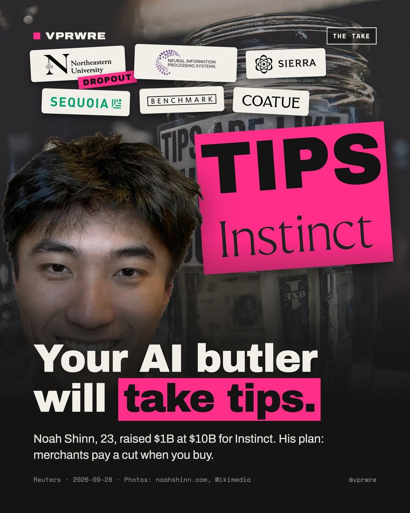

Funding
Your AI butler will take tips.
This spring, Instinct was reportedly worth about $50 million. On September 28 it raised $1 billion at a $10 billion valuation.

Founder Noah Shinn, 23, left Northeastern in 2023. He was first author of Reflexion, an AI-agent paper presented at NeurIPS, and an early researcher at Sierra. Sequoia, Benchmark and Coatue joined the round.
Instinct has no app: you text or call it. It books trips, orders groceries, cancels subscriptions and phones businesses. The day of the raise, it plugged into Shopify’s merchants. Invites now resell on eBay.
The business plan is the story. Shinn wants Instinct free for users and paid by a cut of what merchants sell through it, with no ads. On Invest Like the Best, he weighed that cut against Shopify’s ~2.5%, Amazon’s 10% and Apple’s 30%.
What we can’t verify: the numbers are his. He says 35% of users shop with it, 40% hand over a card within three weeks, and about $1 billion a year flows through it, half of it travel. No revenue, fee or margin is public. Our 3–10% math is an illustration, not a disclosed rate.
The big platforms noticed. Meta’s AI chief, Alexandr Wang, has called it “Insect.” Meta’s Muse and OpenAI’s Dots launched within weeks of each other.
Our take: the bet is sane, but an assistant paid by merchants has to show you why it picked. Disclosure is the moat.
The next storefront is whoever you let choose.
Would you let an AI shop for you if it earned a cut?
Background
Instinct was founded in 2025 by Noah Shinn, who studied at Northeastern University, did research at MIT and left school in 2023. He was the first author of Reflexion, a NeurIPS paper on AI agents that improve themselves, and later worked as a research scientist at Sierra, the AI customer-service company led by Bret Taylor.
The company’s valuation rose unusually fast. Instinct was valued at about $50 million in the spring, raised $75 million at roughly $500 million in early August, then raised $250 million at $2.5 billion in late August, the same month it opened to users by invitation. The September 28 round, which included Sequoia Capital, Benchmark and Coatue, brought its total funding to more than $1.3 billion. Earlier backers include Kleiner Perkins, Index Ventures, Conviction and Greenoaks. According to published reports, Instinct had 14 employees and more than 100,000 users at the time of the raise, was free to use and had not disclosed a revenue model.
Instinct is not alone in the field. Meta launched its own assistant, Muse, on September 8 with partners including Shopify, PayPal, Instacart and Expedia, and OpenAI has been reported to be preparing a similar product.
Sources
- AI agent firm Instinct raises $1 billion in latest funding round Reuters (via KSL.com)
- AI Agent Startup Instinct Is Now Worth $10 Billion With Just 14 Employees OfficeChai
- Instinct in talks to raise $1B at $10B valuation, quadrupling in under a month Crypto Briefing
- Instinct raises $1B Series C at $10B for personal AI agent AI Weekly
The carousel
12 slides · Open on Instagram
Disclosure: VPRWRE drafts with Claude, Anthropic’s AI.